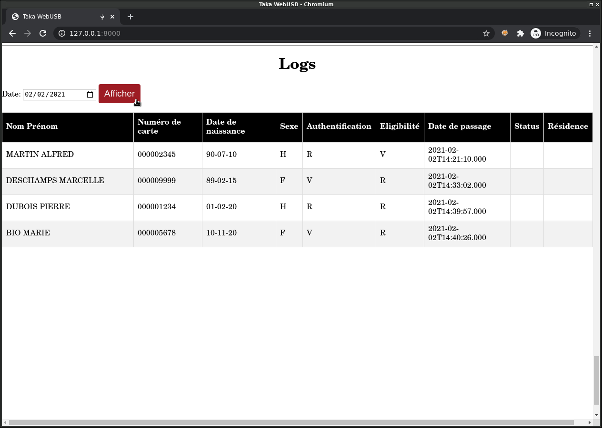

Journaux¶
Chaque opération d’authentification d’un bénéficiaire est enregistrée avec la date et l’heure de passage (UTC) dans un journal stocké dans une mémoire de type carte micro SD, au format CSV.
La carte SD contient un système de fichier de type FAT32, organisé de la manière suivante:
Un dossier par année (2020, 2021, etc.)
Pour chaque année, un fichier texte par jour (20210101.TXT, 20210102.TXT, etc.)
Exemple:
nsh> ls LOGS/
2020/
2021/
nsh> ls LOGS/2021/
20210128.TXT
20210129.TXT
20210202.TXT
nsh> cat LOGS/2021/20210202.TXT
MARTIN<<ALFRED,000002345,90-07-10,H,R,V,2021-02-02T14:21:10.000,,
DESCHAMPS<<MARCELLE,000009999,89-02-15,F,V,R,2021-02-02T14:33:02.000,,
DUBOIS<<PIERRE,000001234,01-02-20,H,R,R,2021-02-02T14:39:57.000,,
BIO<<MARIE,000005678,10-11-20,F,V,R,2021-02-02T14:40:26.000,,
Format¶
Les logs sont stockés au format texte (CSV), et contiennent les colonnes suivantes:
Nom/Prénom: Format NOM<<PRENOM (Comme sur le MRZ de la carte)
Numéro de carte: Exemple: 000001234
Date de naissance: Format yy-MM-dd. (L’année est stockée seulement sur 2 chiffres, le format long 4 chiffres n’étant pas provisionné dans les cartes fournies)
Sexe: H = Homme, F = Femme
Authentification: Résultat de la vérification d’empreinte (V = Valide, R = Rejet)
Eligibilité: Résultat d’éligibilité à l’assurance maladie (V = Valide, R = Rejet)
Date de passage: Format yyyy-MM-dd’T’HH:mm:ss.000 (Heure UTC)
Statut: (Non implémenté, le statut de pauvreté étant chiffré)
Résidence: (Non implémenté, l’adresse n’étant pas provisionnée dans les cartes fournies)
La fonction d’export des logs est visible ici:
https://github.com/lambdaconcept/taka-apps/blob/master/examples/taka/logs.c
Accès¶
Les logs sont accessibles par l’API, voir Lecture des journaux
{kind=link}
Note: Bien sur les logs sont aussi accessibles en retirant la carte SD du boitier Taka.